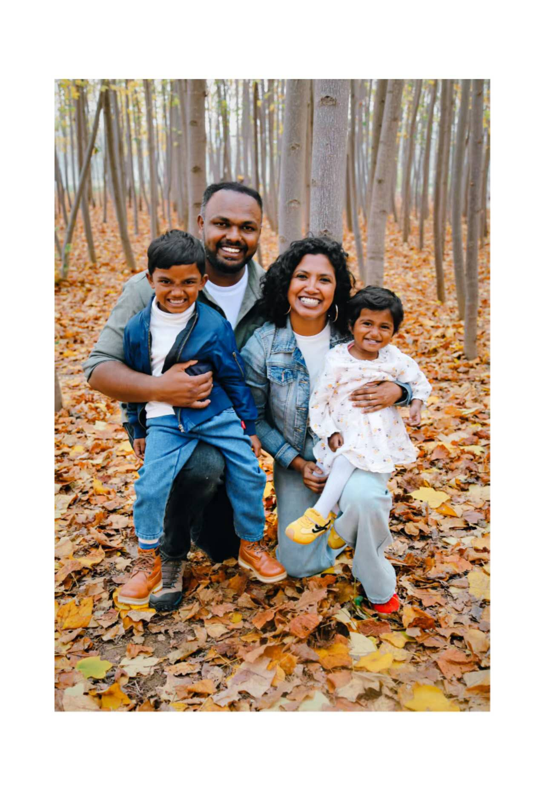

Glen, Keren, Trevor and Rae
Educators · Digital Transformation · SEN & EAL
Educators with a shared calling rooted in faith, internationally experienced, and committed to transformational teaching in Christian school communities.
Letter of Introduction
With over 11 years of experience in IT networking and infrastructure, combined with 9 years of teaching, I have been passionately committed to serving God through education. At Hebron School, I led the Computer Studies department and played a key role in enhancing the school's ICT environment. This included navigating the entire school into a comprehensive Virtual Learning Environment using Google Workspace, leading extensive workshops, and training staff during the critical lockdown digital transition.
I have continued this leadership by directing the whole school transition to Microsoft 365 here at Zhongshi. Alongside these institutional roles, I have spent the past three years supporting schools with limited resources during my holidays, helping train staff and improve their teaching methods.
Beyond my professional endeavors, I am exceptionally proud of my wife, Keren, who was my cherished colleague at Hebron for the past five years. She is a remarkable educator with a master's degree in English Literature and has dedicated her career to teaching SEN and EAL. Her work in identifying and teaching children with dyslexia and TESOL has made a profound difference in their lives, creating an inclusive environment where all learners can thrive.
On a personal note, my wife and I have been blessed with two children, Trevor (5 years old) and Rae (2 years old). Their presence has deepened our commitment to fostering a nurturing and supportive learning environment for all students. As a family, we are excited about the prospect of joining a school that values inclusivity and community, and I am confident we would thrive in such an environment.
I would be grateful for the opportunity to discuss any potential roles where I could contribute to the school's mission. Thank you for considering my application, and I look forward to the possibility of becoming part of your school community.
Jesus Glen Joshua
12+ years of technology leadership and 9 years of Cambridge-certified teaching. I build the systems, and I teach the students who will one day run them.
Built Hebron School's Computer Science and KS1–KS4 Computing curriculum from the ground up. At WZFS, I am designing the PSHE curriculum specifically to meet ACSI standards.
Led the critical transition to Google Workspace and Moodle during Hebron's lockdown period. Currently directing the comprehensive Microsoft 365 integration at WZFS.
Providing pastoral support for Grade 7 at WZFS, bridging cultural expectations, while independently managing the entire ICT lab infrastructure and school-wide digital workflows.
Teaching Cambridge ICT & Computing. Introduced Computing curriculum, led M365 transition, developed PSHE to ACSI standard, serving as Grade 7 Class Advisor.
Led dept for 5+ years. Introduced A-Level IT & CS. Led COVID-19 online transition via Google Workspace and Moodle. Managed 2023 full lab upgrade.
Advanced enterprise server support, multi-datacenter management, and IT infrastructure operations.
Credentials:
• Google Certified Trainer (2024)
• Masters in Networking Technology
• Cambridge International Diploma in Teaching & Learning
Keren Sahana S
10+ years in education specializing in SEN and EAL. Believing every child deserves to be seen, supported, and equipped to flourish in the classroom.
Teaching English Language & Literature and IGCSE ESL at WZFS. Serving as Grade 9 Class Advisor, maintaining regular parent communication and engagement.
Extensive experience developing and maintaining comprehensive Individual Education Plans (IEPs) for students with special educational needs.
Applying Orton-Gillingham and multisensory approaches (including Brain Gym) to support learners with dyslexia and other learning differences.
Delivers standards-based English Language & Literature lessons with differentiation for diverse learners, including ESL students.
Developed IEPs, applied Orton-Gillingham methods, supported EAL students, and conducted frequent progress assessments.
Targeted SEN support in educational settings, following years as a content writer generating digital material for brand visibility.
Credentials:
• MA & BA in English Literature
• SENCO — Ongoing (Good Word Education Centre)
• Dyslexia Training Course
• Intl Diploma in TESOL/TEFL (Young Learners)
Educational Philosophy
Our journey began by challenging traditional teaching methods, but it evolved into a deeper understanding: many teachers genuinely want to be good but struggle with how to adapt. We focus on scaffolding the educational environment and making learning visible, ensuring every student is challenged right at their Zone of Proximal Development (ZPD).
We regularly spend our holidays volunteering in schools across India, training teachers who operate with limited resources. By equipping educators to adopt practical, inclusive teaching methodologies and digital tools, we multiply our impact far beyond our own individual classrooms.
Good technology education is never just about tools—it is fundamentally about people. Systems must be built to reduce friction, empower learners, and free teachers to do what only humans can do: form character, inspire curiosity, and truly care for their students.
Get In Touch
We are currently based in Weihai, China, and welcome conversations regarding future roles in Christian or faith-affiliated school communities.
"Dedicated to making a meaningful impact in Christian education by leveraging technology, inclusive methodologies, and relational depth to build schools where students genuinely flourish."